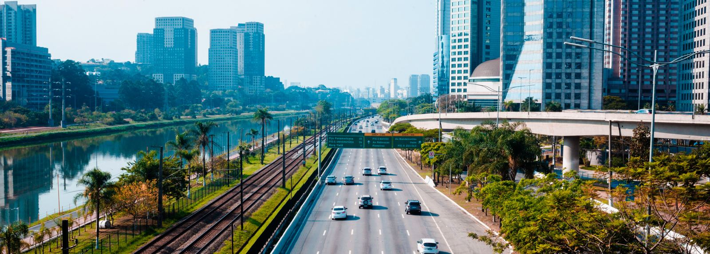
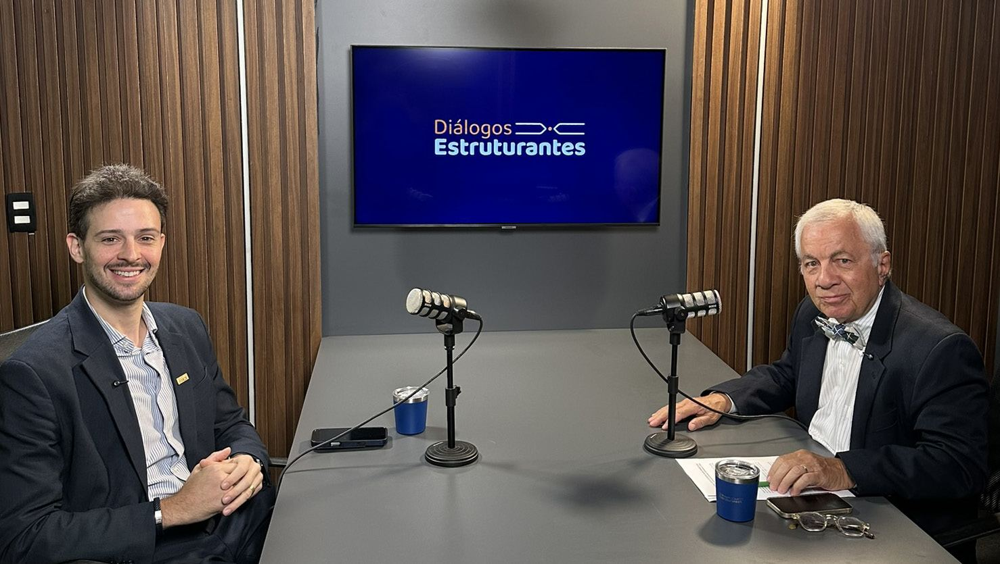

Publicidade
970 × 90320 × 100
 ReportagemZPE em Mato Grosso do Sul será a 5ª a operar no paísA localização estratégica irá conectar São Paulo, Paraná e Goiás a países do Mercosul
ReportagemZPE em Mato Grosso do Sul será a 5ª a operar no paísA localização estratégica irá conectar São Paulo, Paraná e Goiás a países do Mercosul
ReportagemUm ano depois, o Pacto ainda espera pelo futuroLançado para dobrar os aportes até 2030, o Pacto Brasil pela Infraestrutura completa aniversário travado por gargalos históricos e aposta no próximo ciclo de governo
PodcastInvestimento em infraestrutura deve ser política de EstadoPara o presidente do Sicepot-RS, reforma no sistema de contas públicas é uma das medidas para o desenvolvimento do setor PodcastModelo de parceria em Santa Catarina pode ser replicado em outras ZPEsRenato Lacerda, diretor técnico da ZPE de Imbituba (SC), detalha o empreendimento que pode servir de modelo para o país
PodcastModelo de parceria em Santa Catarina pode ser replicado em outras ZPEsRenato Lacerda, diretor técnico da ZPE de Imbituba (SC), detalha o empreendimento que pode servir de modelo para o paísPublicidade
970 × 90320 × 100